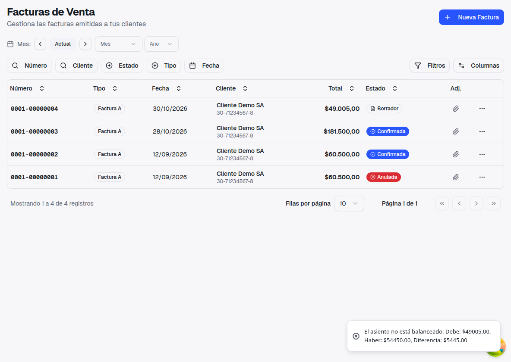
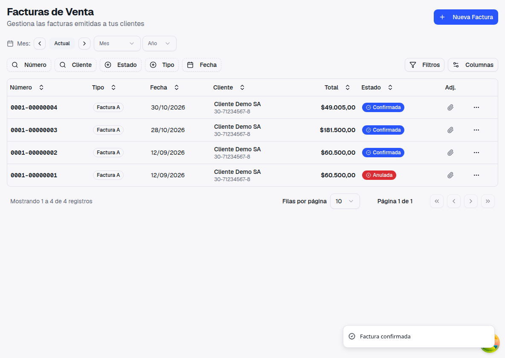
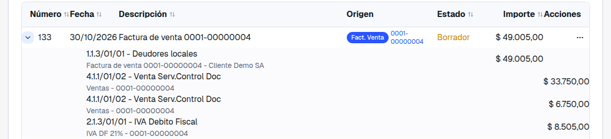
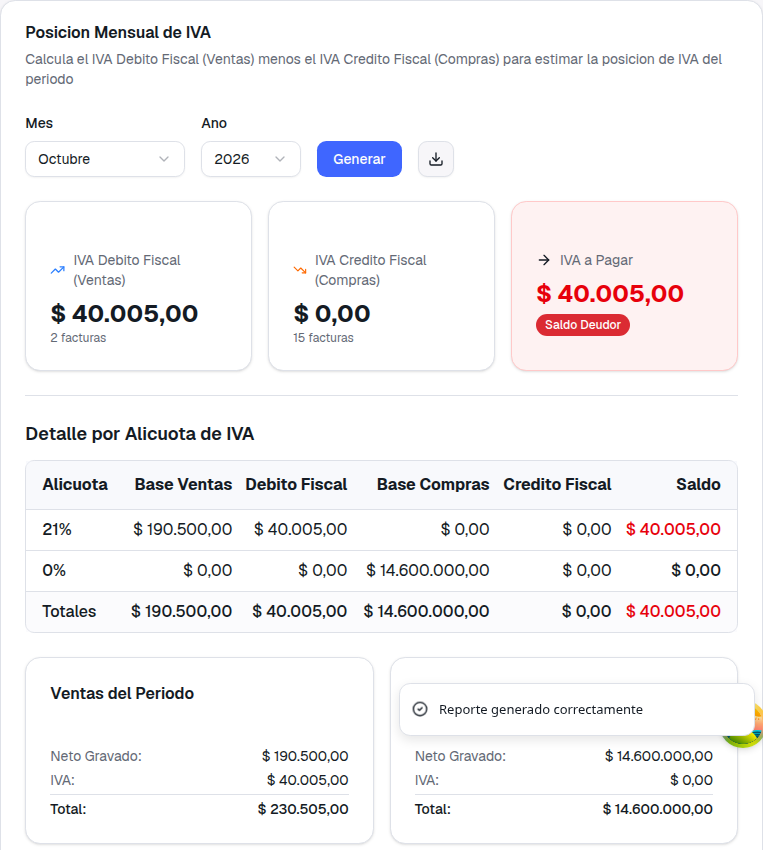
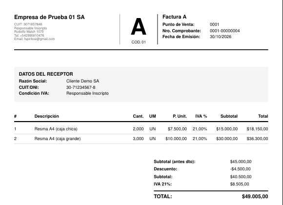

Las facturas de venta con descuento global ya se pueden confirmar
Guía de presentación: qué pasaba, qué cambió y dónde se ve
1. Qué pasaba
Al confirmar una factura de venta con descuento global (un porcentaje o un monto sobre toda
la factura) aparecía el error "El asiento no está balanceado" y la factura no se
podía confirmar.
El total de la factura ya tenía el descuento, pero el asiento armaba las ventas y el IVA con los importes
de cada línea sin el descuento. Lo mismo pasaba en otros lugares que muestran el IVA por
alícuota: el pedido de CAE a ARCA, el Libro IVA Digital, la Posición de IVA y el cuadro de IVA del PDF.
2. Qué cambió

Antes: la factura con 10% de descuento no se confirmaba (diferencia de $5.445).

Ahora: se confirma.

El asiento: Deudores $49.005 = Ventas $40.500 (repartidas por centro de costo sobre el neto con
descuento) + IVA $8.505.
Antes: en la Posición de IVA, el 21% mostraba base $195.000 e IVA $40.950, pero los totales
decían $190.500 y $40.005.

Ahora: el desglose por alícuota coincide con los totales.

El PDF: subtotal antes del descuento, descuento, subtotal e IVA 21% sobre el neto con
descuento.
3. Cómo se calcula
El descuento global se reparte entre las líneas en proporción a su importe, igual
que antes: en el ejemplo, $45.000 menos 10% da un neto de $40.500 e IVA de $8.505.
Ese reparto es el que ahora usan el asiento, el pedido de CAE a ARCA, el Libro
IVA Digital, la Posición de IVA, el reporte Libro IVA Ventas y el PDF.
En el asiento, el descuento baja las ventas de cada línea (no va
a una cuenta de descuentos aparte), como ya pasaba con el descuento por línea. El reparto por centro de
costo se hace sobre el neto con descuento.
Si al repartir quedan centavos de redondeo, van a la alícuota de mayor importe,
para que todo sume exactamente el total del comprobante.
4. Configuración y qué no cambia
No hace falta configurar nada.
✓
Las facturas sin descuento global salen igual
que antes.
✓
Los importes de la factura (neto, IVA y total)
no cambian: ya tenían el descuento. Lo que cambia es el desglose por alícuota y el asiento.
✓
El reporte de ventas por producto sigue mostrando
cada producto sin el descuento global.